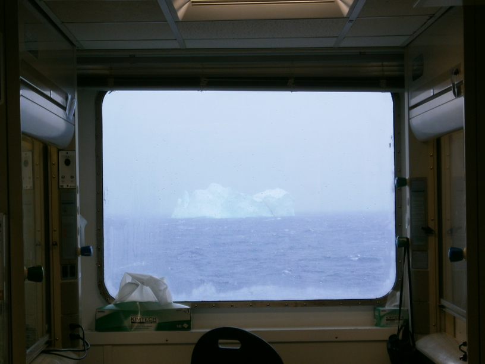

A look back at IODP Expedition 379
2021-02-25
This week, the Proceedings from IODP Expedition 379 finallyThey were supposed to come out six months ago, but were delayed because of COVID. came out! The occasion to reminisce about the expedition, while being able to actually talk about what we found (as the moratorium on the preliminary results is over).
Credit: Tim Fulton, IODP.
First, let's state the obvious: it was one of the most exciting and fantastic experience I had in my life. Working on a mythical ship such as the JOIDES Resolution with the best, most qualified scientists in the world, at the top of their game, in one of the most remote area on Earth, so rarely visited that we actually got to nameThe Resolution Drift! one of the oceanographic feature we spend our time on, surrounded by nothing but a constant flow of icebergs (700+ of them were counted and monitored during our trip) and a few curious humpback whales, all that to work on one of the most pressing question science has to answer right now (how stable is the West Antarctic Ice Sheet, and how fast is it able to restore itself): i can't fathom what experience, as a scientist, could top that for me.
The micropaleontology lab onboard the JOIDES Resolution has quite some view.
One downside of the constant flow of icebergs is that we spent a lot of time dodging them and thus we had a lot of downtimewhich did give me the time to read Lovecraft's At the Mountains of Madness and Geoff's The Tao of Pooh :) workwise. But when we did drill, it was quite frantic: with a new core on deck every hour or so, processing core catchers for foraminifera and radiolarians (as Margot Courtillat and I were sharing samples) as well as the occasional in-core sample, and then scanning countless (mostly empty) slides to find the one or two rare rads we could use for figuring out the core age range was quite a thrill. Two years later, I can still smell the fresh core catchers, that mostly barren sticky grey clay we got hundreds of meters of.

The day crew in discussion over the significance of our first "bioturbated green interval". Picture credit: Tim Fulton, IODP.
While the endless laminated grey clay seems to correspond to glacial deposits, that small greener interval pictured here might correspond to retreat/collapse of the icesheet (the jury is still out on what it means exactly, but whatever it means, it is what we went in the Amundsen Sea for). Also: while the laminated grey intervals were mostly barren of radiolarians, those greener intervals were generally more prone to contain radiolarians and were thus packed with informations for me.
This was the desperate look of the micropaleontology report board during those long, barren grey laminated intervals. But then, when radiolarians are present one stumbles immediately on something that can pinpoint the age fairly precisely: here Helotholus vema Hays 1965.
While most of our research plans were disrupted because of COVID-19, we're still working at it diligently. Stay tune for great science to come out of the material we drilled during Expedition 379!